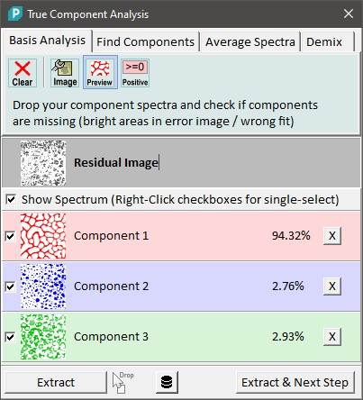
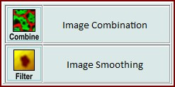
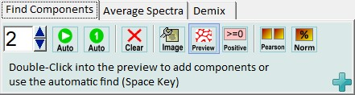
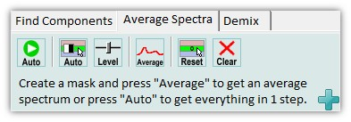
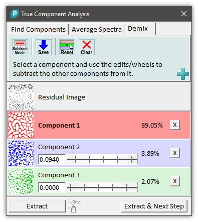
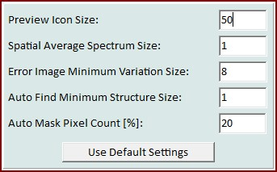
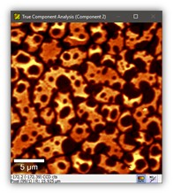
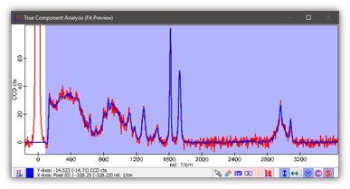
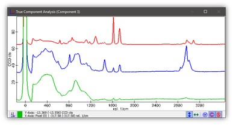

|
|
描述
真组分分析对话框是基础分析对话框的后继者。它创建强度分布图像，显示不同组分的分布。在WITec Project Plus版本中，对话框自动查找组分、创建平均组分光谱并支持光谱分离。
另请参见基础分析（数学）。
输入和结果
输入：
结果：
用户界面
基础分析选项卡仅在WITec Project PLUS版本未激活时可见。
它允许像先前版本的WITec Project一样进行正常的基础分析。

清除（工具按钮）
按清除以删除所有组分光谱。
图像（工具按钮）
显示用于更改预览缩略图大小的选项。
预览（工具按钮）
打开或关闭预览计算。如果打开（默认），则对整个图像图谱数据对象计算基础分析，并为当前选中的组分或残差图像显示预览图像。
对于非常大的数据集，此功能默认关闭，可以由用户打开。
正值（工具按钮）
如果选中，负加权因子将设置为零。这样您可以检查是否有混合光谱。
---
残差图像（第一个列表条目）
显示残差组分的预览缩略图。您可以单击此条目以选择残差图像，在图像查看器中以大图预览。在此图像中，明亮区域显示哪些组分缺失，以便您可以找到并添加到组分列表中。
在分离模式下，此图像显示可能混合的组分上的明亮区域，以便您可以轻松分离。
显示光谱（复选框）
在此您可以显示或隐藏预览图谱窗口中的所有组分。
组分1、2...（更多列表条目）
复选框可用于在预览图谱窗口中显示或隐藏每个单独的组分光谱。
显示该组分的强度图像预览缩略图。
您只需单击"组分1"标签即可编辑名称。
百分比标签显示每个组分混合了多少以描述当前选中的光谱。
X按钮可让您从列表中删除该组分。
提取（按钮）
提取项目中的强度分布图像和平均组分光谱（如果由对话框创建）。
您可以拖放多个图像图谱数据对象到此按钮进行批处理。
导出到数据库应用程序（按钮）
将所有组分光谱导出到数据库应用程序，例如WITec TrueMatch或ACDLabs
提取和下一步（按钮）
向导功能：您可以选择是否希望将此对话框的结果图像用作图像组合或进行一些图像平滑：


这是一个WITec Project Plus功能！
数字编辑和上/下按钮
为自动组分查找器设置光谱数量。只需选择组分数量并按"自动"。
自动（工具按钮）
启动自动组分查找器。自动查找并添加所需数量的光谱。
自动1（工具按钮）
使用当前残差图像自动添加一个组分。
清除（工具按钮）
删除所有组分光谱。
图像（工具按钮）
显示用于添加和查找组分的选项，请参见高级选项。
预览（工具按钮）
启动自动组分查找器。
正值（工具按钮）
如果选中，负加权因子将设置为零。这样您可以检查是否有混合光谱。
Pearson（工具按钮）
使用Pearson相关系数导出所有组分图像。使用光谱掩码进行计算。
归一化（工具按钮）
导出具有归一化百分比值的所有组分图像。
请参见百分比图像（数学）。

这是一个WITec Project Plus功能！
自动（第一个工具按钮）
这将为所有组分计算平均光谱。
自动（第二个工具按钮）
为当前选中的组分自动计算图像掩码。
此掩码可以编辑或直接用于计算平均光谱（只需按平均工具按钮）。
级别
这将打开图像查看器的阈值掩码工具，以定义哪些像素应在图像掩码中设置。
此掩码可以编辑或直接用于计算平均光谱（只需按平均工具按钮）。
平均
这将使用当前图像掩码为所选组分计算平均光谱。
您可以使用自动掩码或级别/阈值工具定义掩码，或使用自定义图像查看器掩码工具定义自己的掩码。
重置
重置当前选中的光谱的平均操作。
清除
重置所有组件的所有平均操作。

这是一个WITec Project Plus功能！
扣除模式（工具按钮）
如果选中，可以通过更改加权因子从所有其他组分中扣除选中的组分。
如果未选中，将通过使用加权因子扣除其他组分来更改选中的组分。
保存（工具按钮）
保存当前的分离，以便从其他光谱中扣除分离后的光谱。
重置（工具按钮）
重置当前选中组分的分离（将所有加权因子设置为零）。这不会重置已保存的分离。
清除（工具按钮）
重置所有分离。
加权因子（数字编辑和滚轮控制）
您可以简单地转动滚轮或编辑数字来定义用于相互扣除光谱的加权因子。

预览图标大小
这将更改组分列表中预览图标/缩略图的大小。
空间平均光谱大小：
如果使用双击或自动查找算法添加光谱，组分光谱将是附近像素的平均值。此参数定义该光谱的空间平均大小。
误差图像最小变化大小：
定义计算误差图像时如何处理噪声的参数。较高的值避免噪声。
自动查找最小结构大小：
自动找到的光谱的结构大小必须大于此值。
自动掩码像素计数：
在平均选项卡中，您可以自动为选中的组分计算图像掩码。此参数让您仅选择最"重要"的像素，避免选择结构边缘上的像素从而导致混合光谱。
预览窗口
残差图像/强度图像

此图像预览窗口显示残差图像或其中一个组分分布图像。
在WITec Project PLUS版本中，您可以双击此图像以将选定的光谱添加为新组分。残差图像将向您显示缺失的组分。
拟合预览和掩码

拟合图谱预览窗口以红色显示原始光谱，以蓝色显示拟合预览。此预览是所有组分光谱的线性组合，最适合原始光谱。
只需在预览图像中单击即可查看所选光谱和使用组分的拟合曲线。
使用掩码定义哪些光谱区域应被考虑用于拟合组分光谱组合。
组分光谱

此图谱预览窗口显示由用户拖放或使用对话框添加的组分光谱。